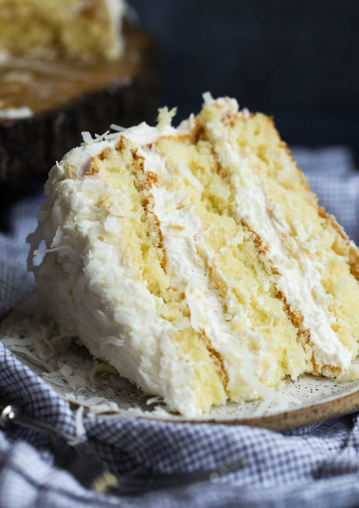
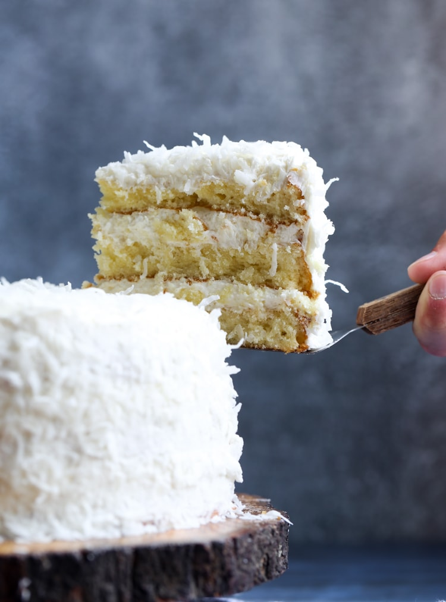

07/Jan
Coconut Bundt Cake
Last week flew by and before I knew it, it was time to plan the menu for Sunday dinner. Sundays have been a perfect opportunity for me to experiment with new dessert recipes, especially those that serve tons of people, since we have help polishing it all off and don't have it sitting around the house, tempting us for days.

This is the very best Coconut Cake Recipe EVER! It's moist, fluffy, and soft, with the perfect amount of coconut flavor all topped with creamy coconut buttercream frosting!
Love a classic cake recipe? Make sure to check out my cake store!
Today's recipe is a MEGA CLASSIC! It's a cake recipe that I LOVE making, but have to get out of the house instantly, or I will eat the entire thing. AND it's not exactly health food.
This Coconut Cake is what cake dreams are made of. It’s rustic and casual looking, but it's special enough to serve on holidays, birthdays, or to guests. This, along with my Cake Store are my go-to cake recipes I make when I want to impress.
The cake itself is soft, fluffy, and moist and the frosting is creamy coconut buttercream! A lot of coconut cakes have cream cheese frosting, but I prefer mine with coconut buttercream. It’s fluffy and sweet, and partners with the cake texture in a gorgeous way. Cake dreams are happening today, lads. Get your mixer ready!